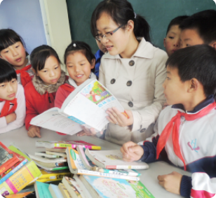
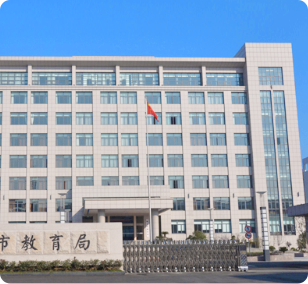
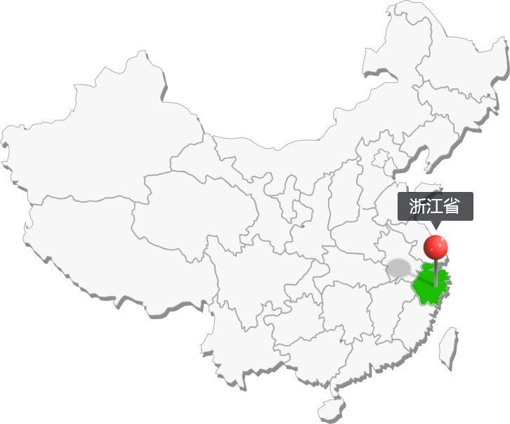

Phschool
体质健康
学生体质健康监测平台
提升
学生综合素质
推动
智慧教育发展
实现
全面家校互联
构建
智慧物联校园
平台概述
体质健康
监测体系
包括：
体质监测数据采集平台
体质监测数据综合平台
体质监测数据采集平台
1
平台与体育监测设备、穿戴式设备等智能设备无缝互联
2
体育监测设备部署于市体测中心和各区县体测中心
3
通过智能设备跟踪学生的日常运动轨迹、采集学生体能数据
4
智能设备上的体测数据自动同步至上报平台
体质监测数据综合平台
1
市级教育管理中心可对下辖区、县的学校进行管理
2
平台可实现数据上传、统计、分析、处理、查询、输出、报 告等管理操作
3
平台可进行体质检测数据的上报和审核、资源共享、数据分析、学校查询、公告发布、网络报名、在线体质检测、用户频道管理等功能拓展
核心应用
学生
01
体质健康测试
监测数据查询
运动方案推荐
健康膳食搭配
网络预约监测
学校
02
监测数据采集
数据统计分析
用户信息管理
教学资源管理
学生考试门禁
教学方案完善

教育部门
03
学生数据审核
数据智能分类
学校排名统计
下属机构管理
单位权限管理
教育资讯管理

家长
04
子女数据查询
运动处方推荐
健康饮食搭配
家校实时互通
平台功能
感知物联监测
学生数据管理
体质健康评测
运动方案推荐
教学资讯管理
家校实时互联
地区选择

杭州
嘉兴
湖州
绍兴
宁波
舟山
金华
温州
台州
丽水
衢州
请选择下辖市
进入查看 >